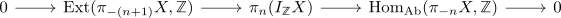
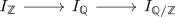
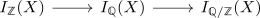
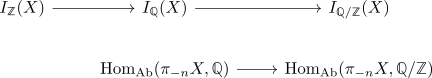
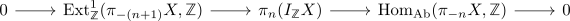

short exact sequence of ext anderson dual spectrum
Proposition
Let $X$ be a spectrum. Then there exists a natural short exact sequence

which splits - albeit unnaturally
Proof
we have a cofiber sequence

which induces - for $X \in \mathrm{Sp}$ - a cofiber sequence

We may apply $\pi_n$ and then the map $I_{\mathbb{Q}}(X) \rightarrow I_{\mathbb{Q}/\mathbb{Z}}(X)$ is given by

Then cutting a short exact sequence out of a long exact sequence shows that there exist short exact sequences

since $\mathbb{Z} \rightarrow \mathbb{Q} \rightarrow \mathbb{Q}/\mathbb{Z}$ is an injective coresolution of $\mathbb{Z}$.
split
using Ext1 and extensions in the heart of a stable category for $\mathcal{D}(\mathbb{Z})$ it suffices to show that
vanishes.
Here Hom into a torsion free module is torsion free shows that $\mathrm{Hom}_{\mathrm{Ab}}(\pi_{-n}X, \mathbb{Z})$ is a torsion free module. Furhtermore, Ext of two abelian groups is a cotorsion group shows that $\mathrm{Ext}^1_{\mathbb{Z}}(\mathrm{Hom}{\mathrm{Ab}}(\pi{-n}X, \mathbb{Z}), \mathrm{Ext}^1_{\mathbb{Z}}(\pi_{-(n+1)} X, \mathbb{Z})) $ vanishes as desired.